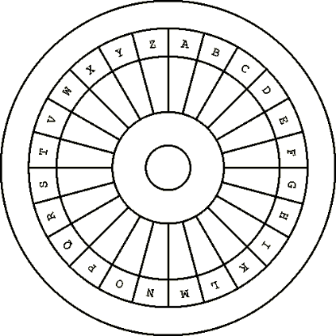

| Previous Next | ||||
|
|
||||
AN INSTRUMENT FOR TELLING TIME BY NIGHT
 This figure is included in this science for telling time by night, which you can do in the following
way. Make one large copper circle containing a small one, and divide it into 24 equal parts, called
hours, designated by a.b.c.d.e.f.g.h.i.k.l.m.n.o.p.q.r.s.t.v.w.x.y.z. The houses between the large
and small circles should be perforated, and both circles connected by 12 straight lines, and the
small circle in the middle should have a hole in the center through which you can look at the Pole
Star while closing one eye and holding the circle toward the Pole Star, so that the circle is half a
palm away from the eye, and there is half a palm's distance measured obliquely from a. to the
forehead, and one palm from g. to the beard, to get a good, equal view of the circumference of the
sky and of the Pole Star through the apertures in the houses .
After sunset, as the Pole Star begins to appear, and you see the two stars that sailors call the Two
Brothers revolving around the Pole Star, and as the Greater Brother appears in some house or
other, this is where you begin to compute the first hour of night, and then you watch the Greater
Brother moving successively from one house to the next, while at the same time you watch the
Pole Star through the hole in the small circle. If night has 9 hours and day has 15, and if the star
called the Brother appears at sunset in house a., then by dawn, when the stars begin to fade, it will
have moved to camera i. And likewise, if it appears in house b., it will have moved to house k. But if
night has 10 hours, and the star we call the Brother appears in house a. in the first hour of night,
then by the last hour of night it will have moved to house k., and so with the others in turn, until the
night that is 15 hours long.
Suppose that the night is 9, or 10, or more hours long, and the Brother appears in a. in the first
hour of night, and someone who has slept, or stayed up at night wants to know how long he slept
or stayed up, he can look at the house that the Brother has moved to, so that if he slept for 3
hours, it will have moved from a. to c., and if he slept for 4 hours it will have moved from a. to d.,
and so forth. If he wants to know how many hours there are till daybreak, and if the night has 10
hours and he slept for 3 hours, he can reckon that there are 7 hours till dawn, and so forth.
This instrument is useful for knowing how long you have slept, or stayed up at night, and how long
you can continue to sleep, or stay up until sunrise; it is useful for night travelers by land or sea.
This knowledge is useful, for instance, to someone who awakes too early and believes that he has
overslept, or conversely. |
||||